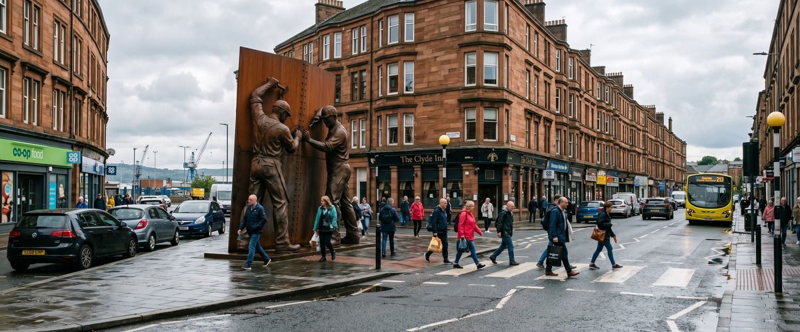
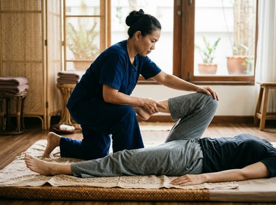

The Shipbuilders of Port Glasgow sculpture in Coronation Park is one of Inverclyde's most striking landmarks, standing ten metres tall on the banks of the River Clyde as a tribute to the workers who shaped this town's identity.

The area around it draws visitors, walkers, and locals who live and work in Port Glasgow, a community with deep roots in maritime industry and a proud connection to the wider Inverclyde area. If you are searching for thai massage near Shipbuilders of Port Glasgow, Thai Massage Greenock is just a short journey along the Clyde coast and ready to welcome you.
Port Glasgow sits immediately to the east of Greenock, which means Thai Massage Greenock on South Street is genuinely close at hand. Whether you have been on your feet exploring the waterfront, working a physical shift locally, or sitting at a desk all day, the proximity of our studio makes a treatment session easy to fit into your week. You can book your session online and choose a time that suits you, whether that is a lunchtime slot or an evening appointment after work.

Port Glasgow has a hard-working character, and many residents carry the physical toll of demanding jobs in their bodies. Neck pain, lower back tension, and stress from long working weeks are exactly what traditional Thai massage is designed to address. Jariya Malone, trained at Bangkok's renowned Wat Po temple, tailors every session to what your body actually needs on the day, drawing on techniques refined through years of practice.
Thai Massage Greenock offers a full range of authentic Thai treatments to suit different needs and preferences:
From Coronation Park, the quickest route to Thai Massage Greenock is by train. Port Glasgow railway station is a short walk from the waterfront, and ScotRail runs a direct service to Greenock West. The journey takes around eight minutes and trains run hourly throughout the day.
From Greenock West station, the studio at 0/2 16 South Street is a straightforward walk into the town centre. The McGills bus service also connects Port Glasgow to central Greenock directly, with services running approximately every fifteen minutes and the journey taking around thirteen minutes.
If you are driving, the route along the A8 coastal road between Port Glasgow and Greenock takes less than ten minutes. Parking is available close to South Street in Greenock town centre.
Jariya Malone brings authentic Wat Po training to every treatment at Thai Massage Greenock, and keeps detailed notes on each client to build on previous sessions. This is not a chain or a franchise. It is a therapist-led practice where the focus is on what you actually need, not a one-size-fits-all routine.
Whether you are dealing with muscle tension built up over a working week, recovering from sport, or simply carrying stress that has nowhere to go, Thai Massage Greenock offers real, targeted relief. You can make a booking online at any time.
Port Glasgow is the second-largest town in the Inverclyde council area, situated immediately east of Greenock on the Firth of Clyde. Its shipbuilding heritage runs deep: the Comet, the first commercial steam ship in Europe, was built here, and the Shipbuilders of Port Glasgow sculpture now stands in Coronation Park as a permanent tribute to the workers who shaped that history. You can read more at Port Glasgow on Wikipedia.
The sculpture is in Coronation Park on the Port Glasgow waterfront, and Thai Massage Greenock is on South Street in Greenock town centre. By train from Port Glasgow station to Greenock West, the journey takes around eight minutes. By car along the A8, it is less than ten minutes. The two towns border each other directly, making it one of the easiest cross-town trips in Inverclyde.
The ScotRail train from Port Glasgow station to Greenock West is the most convenient option, with hourly services and a journey time of about eight minutes. The McGills bus service also runs between the two towns every fifteen minutes and takes around thirteen minutes. From either Greenock West station or the bus stop on West Stewart Street, South Street is a short walk into the centre of town.
Same-day bookings are available subject to appointment availability. The easiest way to check and book is through the online booking form at thaimassagegreenock.co.uk. You can also call the studio on 01475 600868 to speak directly about availability.
Thai Sports Massage is a strong choice for anyone doing physical work, as it targets specific muscle groups, supports recovery, and helps prevent the kind of chronic tension that builds up over time. Traditional Thai Massage, which combines assisted stretching with acupressure along energy lines, is also excellent for releasing deep muscle tightness and restoring range of motion. Jariya will discuss your work, posture, and any areas of concern before the session to make sure the treatment fits your needs.
Thai Massage Greenock operates seven days a week, with appointments available during daytime and evening hours to suit working schedules. The best way to confirm current availability is to use the online booking form or call 01475 600868. Evening and weekend slots are popular, so booking ahead is recommended.